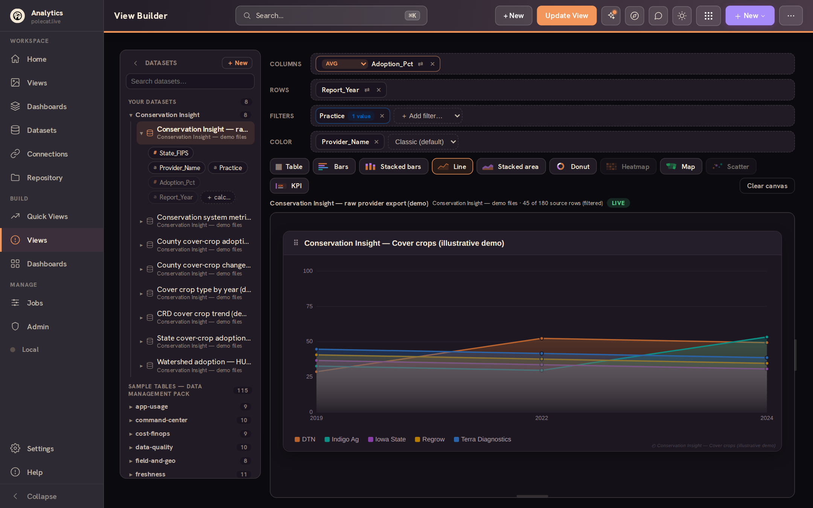
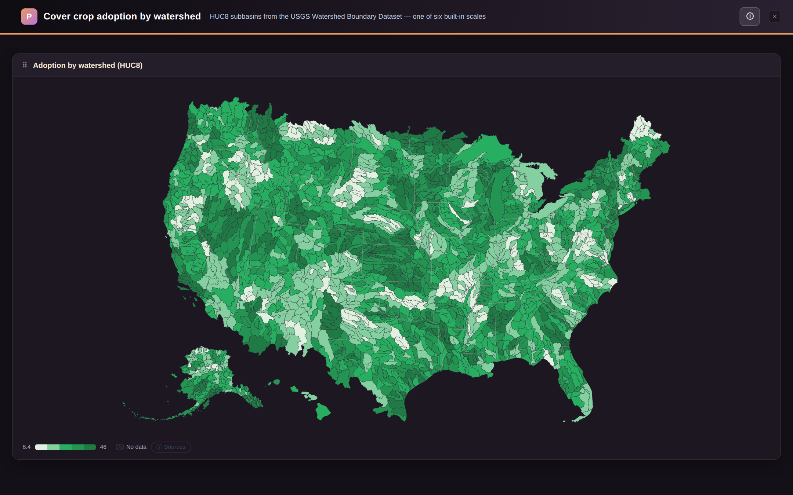
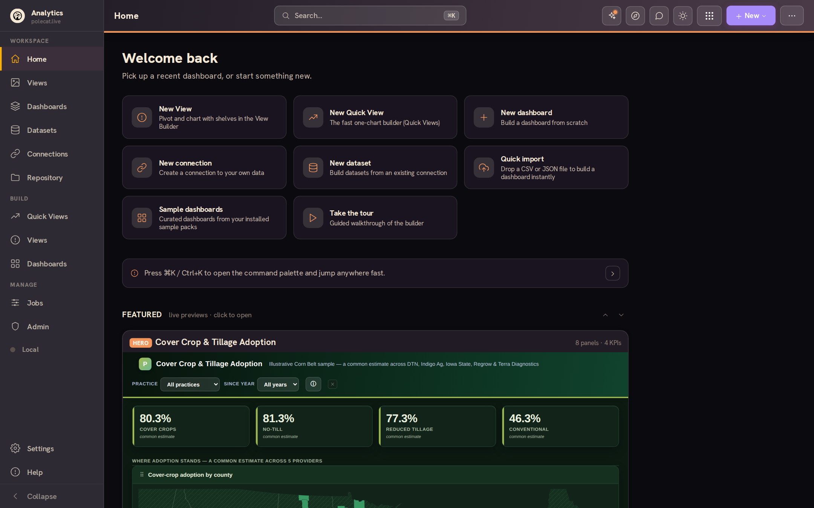
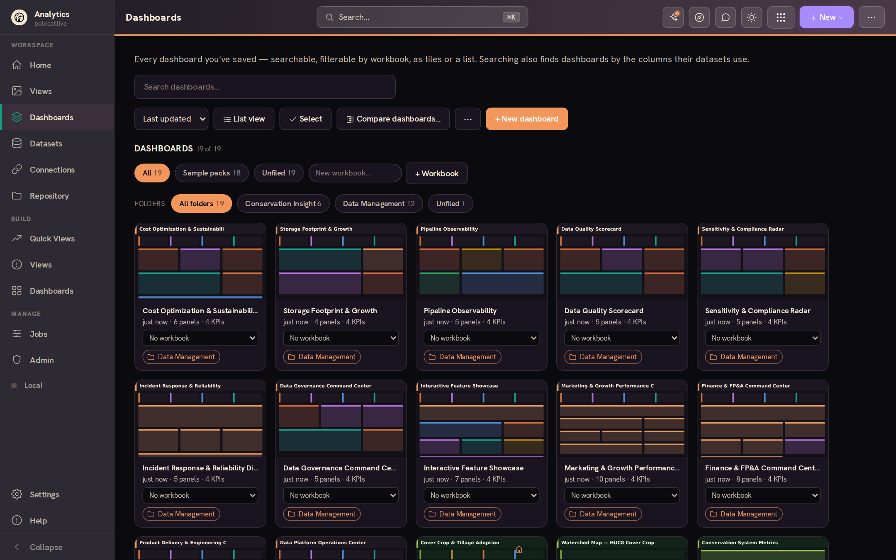
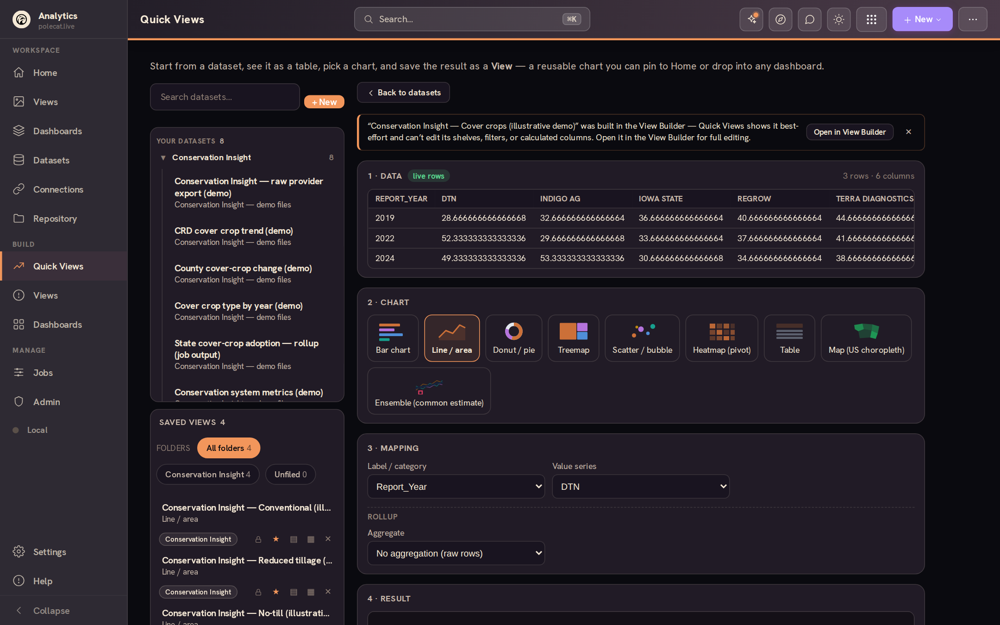
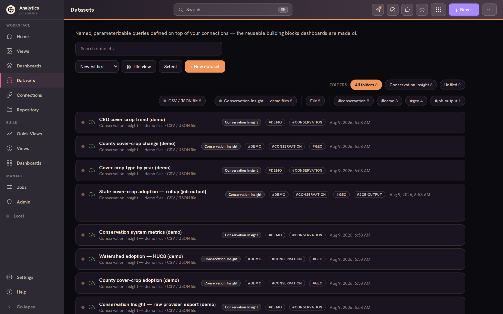
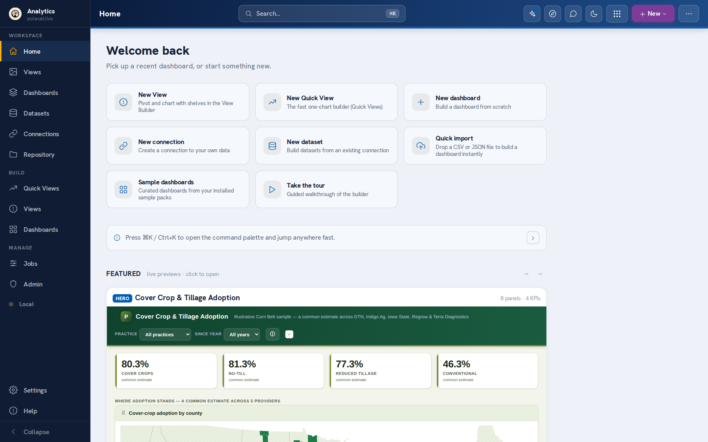
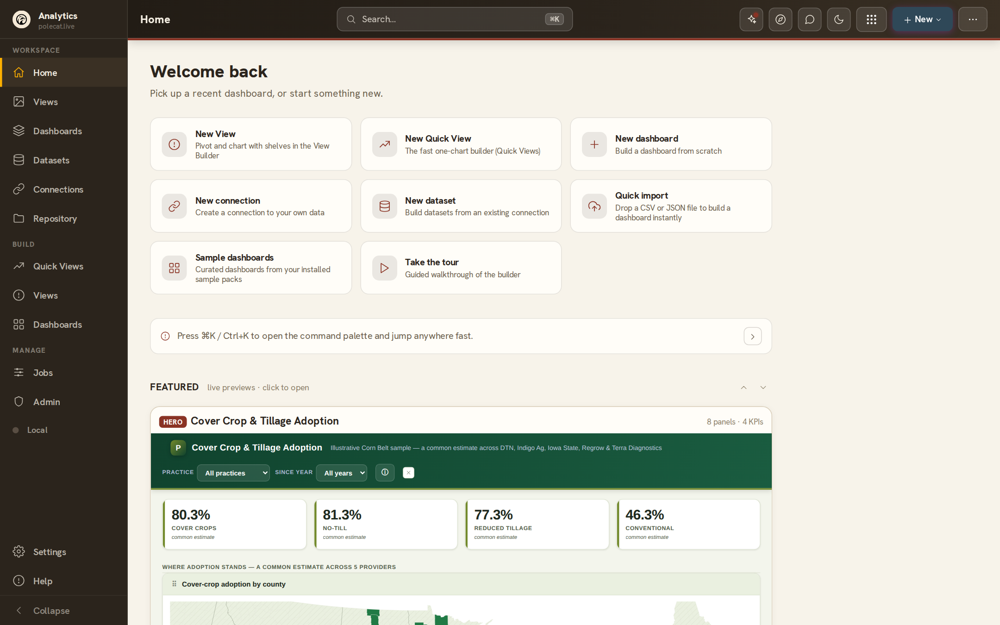
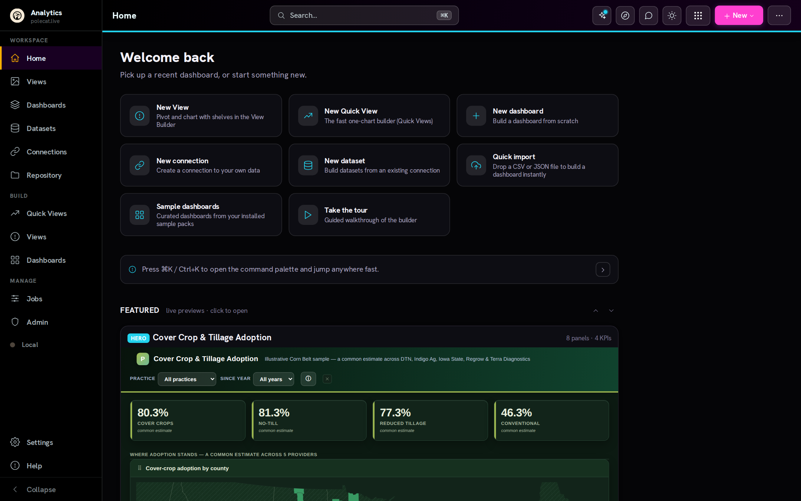
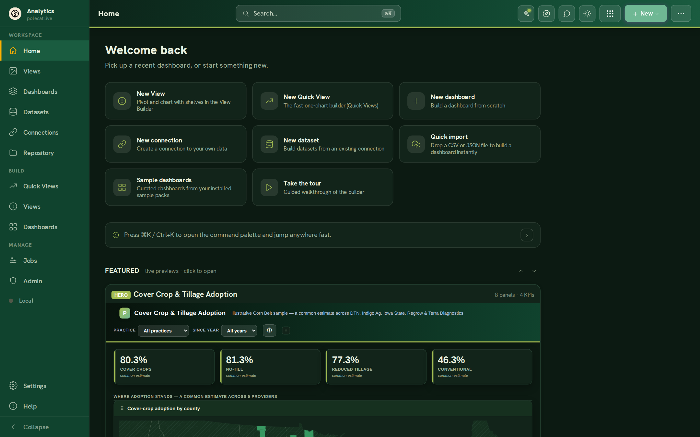

Connect your data.
Build beautiful dashboards.
Share them anywhere.
A full analytics workspace that runs in your browser — connect databases, warehouses, files and Google Sheets, design interactive dashboards visually, and export them as single self-contained HTML files anyone can open. Work solo or share a workspace with your team. Free — and it can run fully local and private if you prefer.










Everything an analytics team needs, nothing to run
Postgres (PostgREST), Supabase, Turso, Firebase, Snowflake, Databricks, BigQuery, Redshift, DuckDB & SQLite over HTTP, Google Sheets, any SQL/HTTP API — or just drop a CSV, JSON or Excel file.
The View Builder drags columns onto shelves and renders the chart live, spreadsheet-style; the Dashboard Builder composes Views, KPIs and filters on a three-pane canvas — 54 chart types from KPIs to heatmaps to forecasts, including US choropleth maps down to county, district, and watershed scale.
Sign in and share one workspace on your own Supabase, Turso or Firebase — admin, editor and viewer roles, per-user security, and read-only viewer links for everyone else.
Define a query once with {{parameters}}; dashboard template variables fill them at run time — one dataset powers many views, filters cascade, everything stays linked.
Every dashboard exports as one self-contained .html file — byte-identical to the live preview, no server, no dependencies. Also PDF, Excel, PowerPoint and Word, plus a header-off embed mode for dropping dashboards into other sites.
Prefer to keep everything on your device? The whole workspace can run fully local and offline, no backend at all — and when you're ready to sync or share, mirror it to your own backend with zero-knowledge secret encryption.
Warm themes, light and dark, keyboard palette, guided tours, version history with visual compare — analytics that feels like a creative tool, not a chore.
54 chart types, built in
Every chart Analytics can draw — click a category to filter, click a tile for details.
Maps that speak your geography
Choropleth maps aren't just fifty states on a US outline. Analytics ships seven region scales — pick one in the inspector and the same dataset lights up a different map.
- States — the classic US choropleth, always a safe default.
- Counties (FIPS) — 3,000+ counties for real local granularity.
- Watersheds (HUC8) — hydrologic units for conservation, water-quality and agriculture work, where drainage basins matter more than county lines.
- USDA crop districts (CRD) — the multi-county reporting districts agricultural statistics are published in.
- Congressional districts — for policy, outreach and civic data.
- ZIP codes (ZCTA) — market and service-area analysis at postal granularity.
- Custom regions — your own map. Import a two-column CSV (county → region name) and the map aggregates counties into whatever your organization calls its slices of the country: sales territories, service areas, ecoregions, franchise zones. No GIS tooling required.
Make it yours
Analytics is designed to be skinned. Seven chrome palettes — each in light and dark — restyle the whole app in one click, and admins can white-label the workspace with their own logo, name and link. Same app, four very different looks:




- Your brand, not ours. Admins set a custom logo, workspace name and link — applied at sign-in and across the whole app for every member, straight from Admin → Branding.
- Chrome and content theme separately. The app chrome has its palettes; each dashboard carries its own theme too, so an embedded or exported dashboard matches wherever it lands.
- Adaptable by design. Domain packs, custom geographies, your own sample content — the same workspace reshapes itself for conservation science, data-platform ops, or whatever your team does.
Your data, wherever it lives
Work against a shared backend, or entirely on your device — connections and datasets form a reusable catalog that follows you, and every adapter speaks a friendly, in-band-error dialect when something's misconfigured.